(2006-12-04 12:08:28)
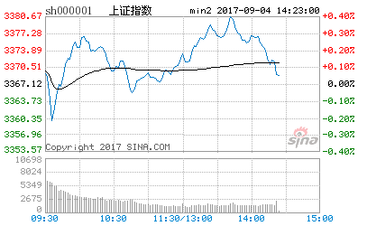
【韶山映山红】原文配图是上证指数的分时图，新浪博客自动更新为当下的新图，这里贴上当天的分时图。】
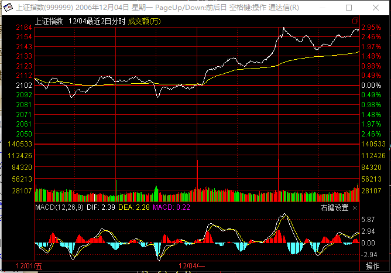
不带套的男人是否好男人，这个问题暂且不说，不带套的操作一定不是好操作票，特别对于资金量大的！【韶山映山红】开篇先说男人带套的问题，说明本文的想表达的“套”主要是“安全套”，而不只是一般人理解的套牢的套。大资金更需要风险管理。】
带套有两种，一种是主动、一种是被动。【韶山映山红】主动，当然就是按计划行事。被动，其实就是听天由命。】
何谓被动带套？就是介入时根本不知道为何介入，在一种盲目的状态下被套了，【韶山映山红】没有依据的进出，盲目介入，这里的被套真是套牢的套。】然后还有一种很错误的理论，认为亏损多少就要止蚀，【韶山映山红】没有安全措施，出问题只好被迫以止蚀作为安全套。】一般人的止蚀不是根据走势分析的情况，而是根据自己亏损情况作为判断依据，不客观。】按这种方法来操作，最终都不可能大成功的。【韶山映山红】盲目介入，凭运气赚钱，错了就止蚀，有一时之运，难有一世之运。】
几乎所有的投资者，都是这种被动带套的，这种人，都是被套所套。【韶山映山红】几乎所有的投资者都是止盈止损的思维，都是画地为牢，被套所套。】
其实，从来不存在真正的止蚀问题，只存在股票是否依然在能搞的范围内的问题，只有这种意义下才存在止蚀：一只股票的走势从能搞变成不能搞。【韶山映山红】所谓止蚀，是防止事情恶化带来更多的损失。所以依据是股票的能搞不能搞。能搞不能搞的判断依据是，介入有理由，理由不存在了，就是不能搞了。理由的不存在包括两种情况：完成了，被破坏了。完成了止盈，破坏了止蚀。】请注意，站在盈亏的，这时并不意味着操作是失败了，可能已经大大赢利了，唯一退出的原因只是股票的走势已经不能搞了。【韶山映山红】退出的原因，以股票走势这个实际情况为依据，而不是以我们自己的愚蠢为依据。】
投资市场中一个最坏的毛病就是根据盈亏进出，而盈亏不是先验的，是根据当下的走势当下决定的，是被动的，根据盈亏进出，就是根据被动的因数进出，这不是被动带套是什么？【韶山映山红】盈亏是结果，以结果为依据的安全防护行为，只是听天由命，所以说是被动带套。】
何谓主动带套？这里有两层意思。
其一，介入不可能一下子完成，特别对于大资金来说，如果不采取主动带套的方法，怎么可能买到足够的货？那种号称从来不带套的，肯定从来没操作过大资金。【韶山映山红】这一段是“主动带套”的第一层意思：被套牢。】
但更重要的是，任何的介入，都有一个主动的防护加入其中，这个防护就是从一旦变为不能搞，就立刻从买入程序中此退出，【韶山映山红】这一段是“主动带套”的第二层意思，就是这个主动的防护，为任何的介入设计相应的退出策略。】介入的理由被破坏而不存在了，就要退出。】这个防护的启动是和任何盈亏无关的，只和当下的走势有关。【韶山映山红】防护的启动取决于客观的走势，而不是人为的盈亏。】
例如，在上一章所说的买入程序里，对于第一个买点，一旦上涨时依然出现男上位的缠绕，那么一定要退出，为什么？因为第一个买点买入的基础在于男上位最后一个缠绕后出现背驰，而现在又出现男上位的缠绕，意味着前面引导买入程序启动的缠绕并不是最后一个缠绕，也就是程序判断上出现问题，因此必须退出。【韶山映山红】一买介入的理由是“男上位最后一个缠绕后出现背驰”，如果“又出现男上位的缠绕”，介入的理由就被破坏而不存在了，就要退出。】
【韶山映山红】一买的“ 套 ”就是：一旦上涨时依然出现男上位的缠绕就退出。“最后一个缠绕”和“背驰”是息息相关的，再一次的缠绕，意味着此时很可能是错误的判断了趋势背驰，或者是小级别的延伸破坏了背驰。总之，转折的能搞变成了不转折的不能搞，所以要退出。而且，按照后面课程的内容，一买之后期望的是趋势+反趋势的转折，一旦出现盘整也要退出。】
一般情况下，这种退出一定是赢利的，但这并不能成为不退出的理由。【韶山映山红】如果止损才退出，这时候的盈利就会阻止正确的退出。】甚至不排除这种情况，就是退出后，缠绕经过以时间换空间的折腾慢慢变成女上位，最后还大幅上涨了（这种情况即使出现，也可以根据第二个买点的原则重新介入，所以真正的机会并不会丢失），【韶山映山红】本级别背驰之后没有如期转折，原走势继续延伸了，甚至是判断错误，本级别没有背驰，然后小级别演化，“经过以时间换空间的折腾”，发生了小转大。这是对小转大最早的描述。】但即使这样，也绝对不能因为这种可能的情况有侥幸心理。因为还有更大的可能是缠绕后出现加速下跌。【韶山映山红】规则要有逻辑，执行要守纪律。】
【韶山映山红】从这一段我们可以看出，类似于a+A+b中枢盘整背驰的一买，之后容易出现两种情况： 一是“前面引导买入程序启动的缠绕并不是最后一个缠绕”，“缠绕后出现加速下跌”，也就是a+A+b盘整走成了a+A+b+B+c趋势。 二是本级别的中枢盘整背驰被破坏，a+A+b盘整继续下跌，但是没有形成趋势，而是发生了小转大，“经过以时间换空间的折腾慢慢变成女上位，最后还大幅上涨了”。这里是对小转大最早的描述，并且给出了对策：二买重新介入。】
对于走势，可能是无位次的，而实现是有位次的，而任何的操作，只能建立在有位次的基础上，这对于熟悉本ID所解《论语》的人应该能理解。半部《论语》治天下，就别说股市了，要股市上脱胎换骨，多看本ID说的《论语》，那是源泉。
而对于上一章所说的第二个买点，一旦该缠绕中出现跌破前面男上位的最低位，就意味着买入程序出现问题，必须在任何一个反弹中把股票出清，【韶山映山红】二买的套就是：一旦该缠绕中出现跌破前面男上位的最低位，就在任何一个反弹退出。这个阶段主张的是二买不能低于一买。二买是转折后的第一次回踩，所以能搞。跌破前低意味着踩漏了，就变成不能搞了，所以要退出。】在这种情况下，不排除后面出现上涨，但理由如上，任何操作，没有百分百准确的，一旦出现特殊情况，一定要先退出来，这是在投资生涯中能长期存活的最重要一点。【韶山映山红】特殊情况的退出策略就是本文所说的“套”。很污吗？为什么大家都理解成套牢的套了呢？】
当然，有经验的人，即使退出，也会按部就班，很有秩序，这和打仗是一个道理，一发现战机不对，就要撤，不能硬抗，否则不给灭了才怪了。【韶山映山红】保存实力很重要。】
投资是一个长期的事业，别抱着赌博的心态企图一次成功，只要有这种心态，最终的结局一定悲惨，这已经被无数事例所验证。【韶山映山红】赌博仰仗天命，天命无常。投资依靠自己长期努力。】
为什么要研究符合自己的买卖程序？就是因为这是市场风浪中唯一安全的港湾，港湾有时候也会有台风，但不能因为有时候有台风就不要港湾了。【韶山映山红】风雨飘摇，要有定海神针。】
还有一点，就是买入程序的成功率和市场的强度有关，在强的市场里，买入程序的成功率基本都在90%以上，但在弱的市场里，这成功率就要低多了。【韶山映山红】方法也有适用性。】现有走势的结构力对未来走势的影响能力不同，下跌结构完成后，强的市场，结构力叠加交易力，使走势倾向于转折；弱的市场，交易力抵消结构力，倾向于原下跌走势的延伸。】
任何根据均线等技术系统构成的买卖程序，都只是一个综合判断的一个子判断，并不是说这一招就可以了。至少有一点是任何技术的买卖程序不能解决的，就是相同程序选出来的股票，为什么有些涨得多、有些涨的少，能不能就此而选出最有力度的，这在实际的操作中是很有意义的问题。用一个庸俗的比喻，技术系统是“海选”，而其后需要的是“复赛”、“PK”，这才能选出真正可以介入的股票。关于这个问题，在后面会逐步展开。【韶山映山红】技术系统是硬指标，解决yes/no的问题，初筛。还要有其他系统的协同，解决从优秀到卓越的问题。】
【韶山映山红】南无月光如来注：
缠师一语三关，三种套子。
1、被动带套，盲目情况下的被套 ，当然不应该的；
2、主动带套之一：介入不可能一下子完成，特别对于大资金来说，如果不采取主动带套的方法，是为了买到足够的货。
3、主动带套之二：一旦买入股票，必须具有防护套，卖点出现，立刻退出。
4、如果从“海选”中选出能进入“决赛”的，对跑赢大盘极具意义。
以图型为例，说明均线系统的“防护套”。【缺图】
http://blog.sina.com.cn/s/blog_60c36c130100i1pf.html 】
本ID对大盘的建议继续有效，引用如下：
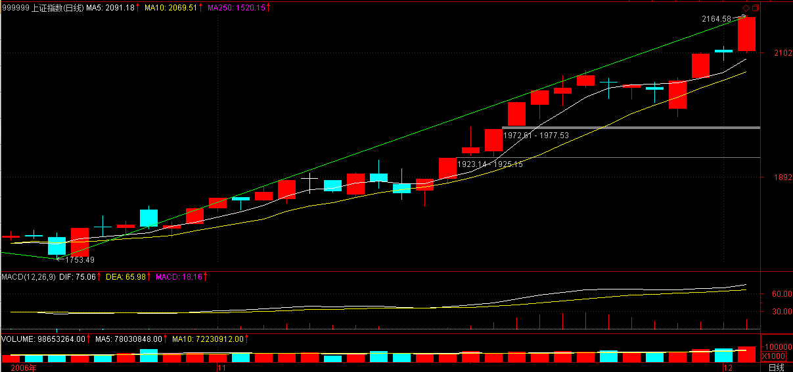
该结论继续有效
缠中说禅 2006-11-29 15:14:38
从大盘健康的角度说，本ID给大盘的建议是：先深成指突破6103点的历史高位，然后上海跟上，突破以后再调整，这样更健康。不知道大盘有没有兴趣听本ID的意见了
2006-12-4 12:15
很高兴上海今天能接受本ID下面的警告,终于不捣乱了,希望继续发扬.
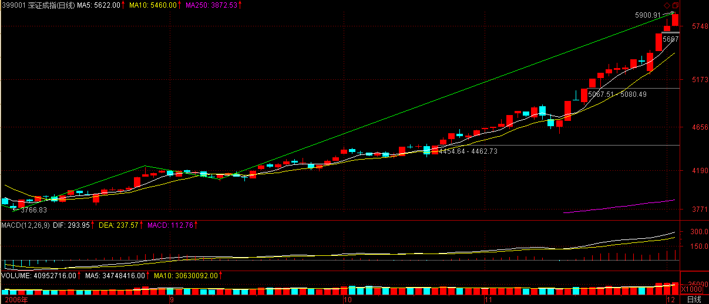
缠中说禅 2006-12-01 12:16:49
现在大盘最大的风险是上海人比较小气，因为深圳先突破历史新高几乎是不可改变的了。上海有可能故意捣乱，让大家都突破不了。这种事情听起来像天方夜谈，但历史上出现过不止一次了。但历史却一次次地证明，只要是大牛市，深圳就是比上海牛，这也是判断行情的一个很重要的经验。当深圳比上海弱时，是大行情的机会很小的。现在看到深圳比上海强，即使是上海人，也应该为此高兴。
2006-12-4 12:17
公告
本ID建立了一个圈子，但不是为了本ID，只是方便来这里的人互相交流，把自己好的文章放到一个地方方便借鉴。点击本ID博客首页左侧的“我的圈子”就能找到。没有设置任何门槛，任何人都可以加入，然后就可以把自己的文章放到上面了，有兴趣的可以看一下。
只要是新浪允许的文章都可以放上去，本ID不会管也没时间管。
2006-12-4 12:18
[匿名] 糊涂蛋 2006-12-04 12:24:36
前段时间看见“大牛不用套”，现在“不带套的操作不是好操作”，数女是提醒防范风险吗？
============
这是一般性操作问题，和大盘走势无关。
2006-12-4 12:25
本月大盘走势，以下话依然有效：
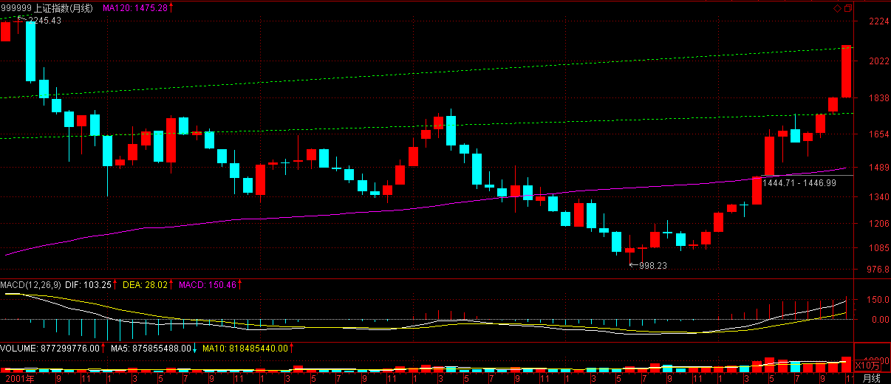
2006-12-01 15:02:23
由于11月是巨阳，12月上冲后出现大幅震荡不可避免，这必须要清醒。
2006-12-4 12:37
[匿名] 糊涂蛋 2006-12-04 12:33:58
因可能要出去一段时间，我想把满仓的600653和000822换成000932，值吗？
==========
要养成完成整个操作的习惯，如果持有的股票没有出现卖出信号，就要一路持有，没有人能保证换回来的一定是金子，即使事后真是金子，那也是事后，但却养成了一个坏习惯。
投资市场，习惯是最重要的。一个坏习惯就足以致命。
2006-12-4 12:41
离开市场一定要有人跟进，不能把股票抛一边没人管，这不是一个市场参与者应该有的态度，现在网络发达，即使外出，关照一下股票还是不难的。
2006-12-4 12:43
[匿名] 醉酒青牛 2006-12-04 12:43:08
我老牛现在搞搞时都在想女上位和男上位的问题,数女妹妹还是多写点,我搞了几年都没入门啊.希望你的文章让我开悟啊.
============
学技术分析，关键是多看图，
还有一点必须注意，就是不能唯技术分析，必须注意其缺点。【韶山映山红】技术分析的缺点有哪些？★可以做个专题，以后研究。】
2006-12-4 12:46
[匿名] nn 2006-12-04 12:45:13
整篇文章都很有道理,只是想问一下,假如撤出时很难做到不亏损，那么还能等反弹吗？如真那样，亏损不就更大吗？当然这种情况多半出现在熊市,可是牛市基本不需要止损,对吗,因为介入时基本都把它作为可搞之列而介入的,俺的理解对吗?
============
其实，熟悉走势的人根本不需要等到真跌破低点了才发现问题，一般来说，一半的位置是不会跌破的，一旦跌破，就是会出问题。【韶山映山红】反弹的回撤，一般不能回撤到反弹的一半的位置，一旦回撤跌破了反弹的一半的位置，就是会出问题。★可以做个专题，以后研究。】
至于跌破低点，一般都会有反抽的，这是最后的走人机会。【韶山映山红】反弹没有形成Ｖ型反转，就回撤跌回起始点，这样一般都会形成abc盘整背驰，就会有一个回到低点以上的反抽。★可以做个专题，以后研究。】
再不走，只能杀跌走了。
2006-12-4 12:50
[匿名] 淡定 2006-12-04 12:49:23
楼主000001和600050两只股票如何？多谢
===========
女上位，该怎么操作，上面已经说的够多了，就是耐心持有等待第一个卖点的出现。
2006-12-4 12:51
[匿名] 外科医生 2006-12-04 12:51:09
现在有人在说3000点了，你觉得离大盘突然死亡还有多远
=============
本ID一年半前私下就说过，这行情N年以后最终可以走到5000点甚至一万点，3000点很离谱吗？
关键不是点位，而是如何利用大的调整去增加资金利用率。
别关心点位，特别对于散户来说，任何一个级别大点的调整都应该避开，没必要参与。
行情走到10000点，对于散户来说，完全可以分解成很多段来操作，所以对最终点位的预测其实意义不大。
2006-12-4 12:56
[匿名] 多多 2006-12-04 12:51:10
请教楼主600210，2.40买入可否继续持有?谢谢!
===========
学了这么多，你应该问自己，目前在你根据自己情况设定的标准下，他还能搞吗？能就持有，不能就不持有，就这么简单。没有先验标准是四海皆准的。
2006-12-4 12:58
[匿名] 数女粉丝 2006-12-04 12:53:22
请问600607可以搞吗？【韶山映山红】600607上实医药，2010年2月3日被上海医药601607吸收合并。】
=========
没涨的都要补涨，这种问题没什么意义，关键是你自己的实际情况。最好用上面教的自己慢慢学会判断。
2006-12-4 12:59
开盘了，先下。再见。
2006-12-4 13:00
短线判断大盘调整的一个最简单方法就是深沪指数的背离,一旦出现,调整或至少是震荡将很快发生。
方法说了,具体就自己马上实践一下,不能什么都说好了,这样永远无法提高。
2006-12-4 13:24
[匿名] 缠禅 2006-12-04 13:51:34
数女，你说的均线缠绕比较难理解！我怎么看av觉得5，10日线都是缠来缠去，总是互相变换体位！找不到转折点啊！
-------------
[匿名] 小明 2006-12-04 14:53:36
没有选对股票，看600519就很典型。
===========
转折点不是看均线，而是指当出现符合要求的缠绕时每次下跌都是好的买货机会。
如果希望买点更加精确，可以中短套用，这样基本就能买到最精确的底部，这个问题上次详细说。【韶山映山红】这里初次提到区间套方法的雏形，中短套用。】
布置一个作业，各位好好看看茅台的月线\周线\日线图，然后分别将符合要求的买点找出来。
2006-12-4 15:02
[匿名] 谗 2006-12-04 13:59:22
前段时间请教的000100(TCL),果然如楼主说的正在磨年线,现已突破年线,我也跟进补仓,现在成本4.3,不知能否解套或需要再次补仓.
==============
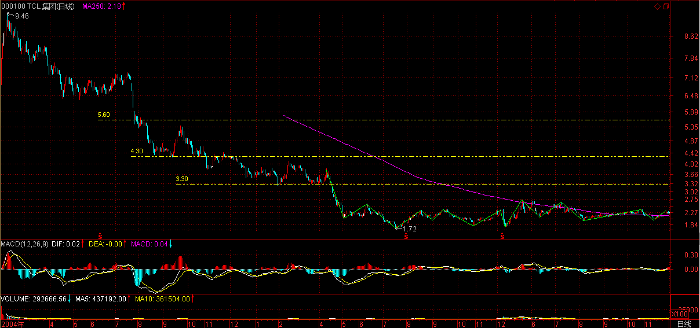
以后补仓就坚决一点，别分着补，一次性就把成本将到某个标准。
【韶山映山红】此人之前提问的时候成本5.6元。缠师回复：“这成本，估计是抄底抄出来的。首先要严重吸取教训，特别散户，绝对不要抄底，一定要等股票走稳将启动才介入。目前该股正在磨年线，一旦站稳回有一波行情。但你那成本也太高了，能否到你的成本还真不好说。如果有可能，趁调整时补点仓，能把成本调整到3元附近，那解套甚至挣个百分之几十的机会，还是很大的。如果你短线技术好一点的，可以不用那么死板，补三分之一到一半的仓，根据短线指标弄短差把成本降下来。你现在的问题是成本太高了，以后千万别去炒底，千万记住。”】
【韶山映山红】一般的扭亏策略就是低位补仓来摊薄、拉低成本价，等反弹的机会实现账面的扭亏。这种方法的前提是下跌结束，否则抄底还会加大亏损程度。而且还要特别大仓位的补仓才有效。以原仓位为基准，补等量的仓，只能降低差价的一半，效果并不好。具体到这个实例，000100 TCL集团，上次问答的2006-11-23收盘价2.14元，这次问答的2006-12-04收盘价2.33元，要把成本拉低到4.30元，可以估算此人补仓的量大约在六七成，不算少了。】
4.3在明年是有机会达到的,但如果是3.3元,机会就大多了,很有可能明年上半年就见到.【韶山映山红】从5.6元拉低到3.3元，大约要补两倍的仓。有多少人有那么大的备用资金啊。】
【韶山映山红】这样腰斩的票，补仓就要几倍于原来的仓位，如果补在半山腰就死定了。补仓，实际上是用一大笔新的资金来操作，用盈利覆盖原来的亏损。可是，如果真有这样的操作能力，又何至于深套？有这样的盈利能力，又何必用在已经腰斩的老股？这样的补仓操作真的应该吗？还是应该认输离场，换更好的标的？★以后研究。】
有一种方法，就是也不再补仓了，在下次中线上涨的高位把这次补仓的出掉，然后等其后的中线调整回试年线在补回，而原来套牢的一直不动，这样估计你的成本能降到4元以下，明年解套的机会就很大了。【韶山映山红】补了原仓位六七成的仓之后，“这次补仓的”约占新的总仓位的四成。这里表明，在缠师心目中，四成仓位的进出算是大动作了，要等“中线上涨的高位”才出掉，“中线调整回试年线”才补回。】
当然，如果你的短线技术还可以，就利用每次调整把回补的出一部分，下来再回补，这样反复几次，很快就能解套了。【韶山映山红】补了原仓位六七成的仓之后，“这次补仓的”占新的总仓位的四成，打短差再用其中的一部分。如果把补仓的分成两半去打短差，就相当于两成仓位。参考这个实例，我们可以设定打短差的仓位可以是总仓位的1/3、1/4、1/5等。】
当然，有一个原则，原来套牢的不要动。【韶山映山红】原来套牢的参与打短差，就有可能因为技术不到家而卖飞，那就相当于低位割肉，放大了亏损，更不利于扭亏为盈了。】
这用补仓的仓位来动，这样既不增加仓位，也不占用更多的资金，其他钱可以关注另外的。【韶山映山红】补仓的资金是一开始就预留的，所以把补仓视为不增加仓位，也不占用更多的资金。这笔钱不用的时候以什么状态存在？每天做逆回购？★流动资金的配比和储存方式等，可以做个专题，以后研究。】
2006-12-4 15:12
[匿名] 木头 2006-12-04 15:06:16
数学妹妹，山东高速这股怎么样，能买吗？谢谢你啊！【韶山映山红】600350山东高速。】
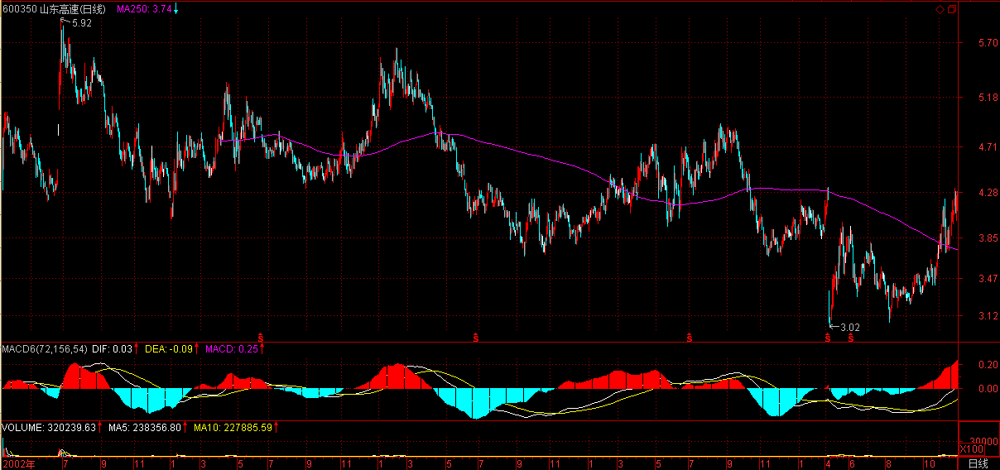
==============
牛市里,随便什么时候买,按赌博的几率算,赢面也是很大的.但这不是长久之计.根据这几次课,你应该知道符合要求的买点早过了,究竟怎样,好好自己分析一下,这才是你自己的东西.
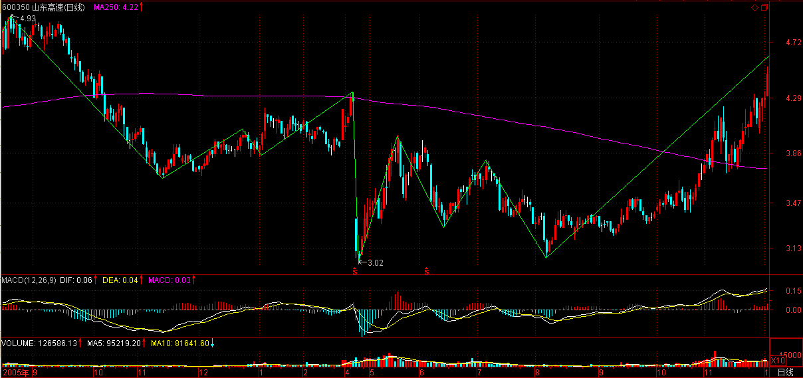
2006-12-4 15:17
[匿名] YY 2006-12-04 15:18:07
楼主，你这样精细的教我们，是不是想把我们也培养成你这样的高手啊？：）
==========
本ID只能教最基本的技术,心态没法教,要学,就要多学本ID说的<论语>等,然后反复在实际中修炼,那才有提高的可能.
2006-12-4 15:21
[匿名] 缠禅 2006-12-04 13:51:34
数女，你说的均线缠绕比较难理解！我怎么看av觉得5，10日线都是缠来缠去，总是互相变换体位！找不到转折点啊！
-----------
[匿名] 小明 2006-12-04 14:53:36
没有选对股票，看600519就很典型。
===========
缠中说禅 2006-12-4 15:02
转折点不是看均线,而是指当出现符合要求的缠绕时每次下跌都是好的买货机会.如果希望买点更加精确,可以中短套用,这样基本就能买到最精确的底部,这个问题上次详细说.
布置一个作业,各位好好看看茅台的月线\周线\日线图,然后分别将符合要求的买点找出来.
---------------------------------
[匿名] 瞎鼓捣 2006-12-4 15:18
我也有同感，600519的均线我也做过作业，9.14的日期好像对不上，缠绕和背驰都比较不好理解，可能是无性较差，另外一个收获就是，根据自己的交易系统（将逐步完善）寻找适合自己搞得股票。本人现在选择能搞得标准是：
1、在年线上还没有大幅拉升（初步可搞）
2、做平台整理（正在前戏）
3、突破颈线即将进入拉升（预期中高潮即将来临）
600058即是本人根据此程序选择的面首，请博主点评，谢谢。
==================
这选对了,在周线上,该股11月17日那周是典型的第二类买点.那时候介入就是最好的时机.
【韶山映山红】600058五矿发展。为什么不是前面第一个低点呢？以后研究。】
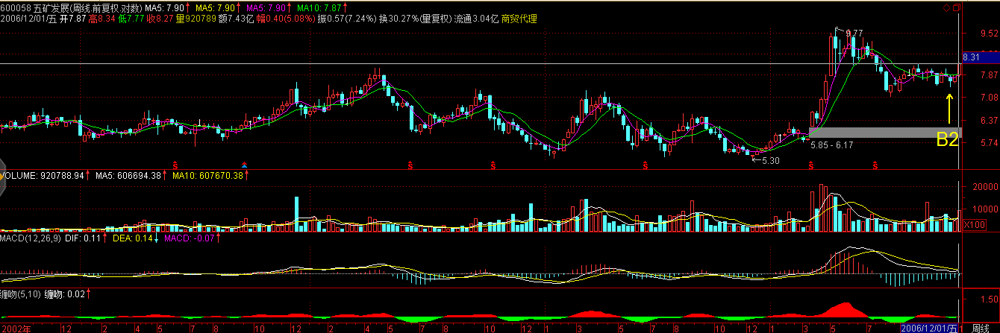
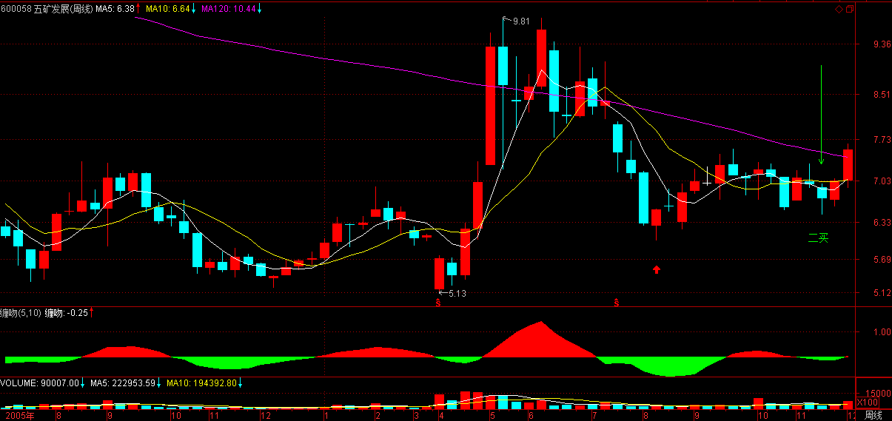
2006-12-4 15:23
[匿名] 中间体 2006-12-04 15:06:46
沉不住气,看到其它股涨,我的不涨,想换股,这毛病怎么克服.缠姐.
==========
关键是没有一个坚固的港湾,必须从现在开始自己建立.
2006-12-4 15:24
[匿名] 中间体 2006-12-04 15:24:01
按缠姐的方发, 资金利用率是不是底,虽然安全, 因为底部的个股上涨开始会很慢, 有时可能进一步缠绕, 是不是那种刚突破的个股比较好呢? 像今天的600832. 这样的话买入法就变了. 【韶山映山红】600832东方明珠。2015.04.29最后交易日后退市。现在的东方明珠同名不同股，代码不一样。】
============
想资金利用率高很简单,把操作的图形改为分钟线等,自然就高了.但这对大资金无效.本ID所说是面对所有情况的,而各人根据自己的资金量来选择相应的操作图形周期.
2006-12-4 15:27
今天下午走势,前面的判断依然有效,只要两市不互相拆台,本ID如下建议将如期很快实现,所以现在只要看好两市是否背离就可以,一旦背离就要特别小心了.
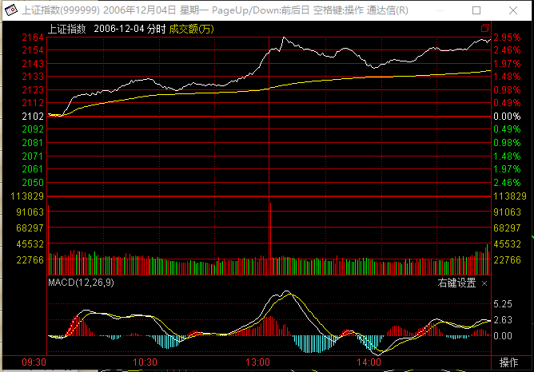
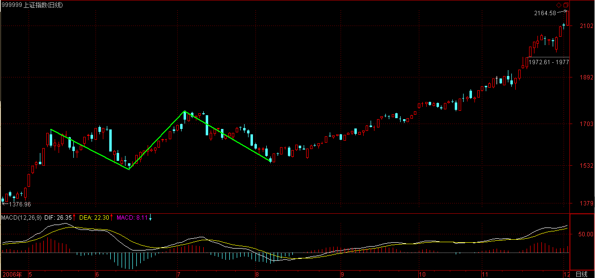
缠中说禅 2006-11-29 15:14:38
从大盘健康的角度说，本ID给大盘的建议是：先深成指突破6103点的历史高位，然后上海跟上，突破以后再调整，这样更健康。不知道大盘有没有兴趣听本ID的意见了
2006-12-4 15:35
[匿名] 小明 2006-12-04 15:34:46
由于本人的资金很小，平均每个股票待在手里不过2天，所以到现在虽然是牛了这么久，竟然还亏钱。
我准备按照缠mm所说，适当的看分钟线。请问，分钟线看多少分钟的适宜？30分钟是不是最好的？
===========
自己好好选择,多模拟,多看历史走势.用小资金学会了,以后就好办了.
如果是超短线,5分钟就足够了.
2006-12-4 15:37
学技术,各位一定要多看图,把所有疑问都要搞清楚,不清楚就提在这里,本ID在后面的课程里会继续说的.一定要搞明白,不明白也要搞到明白为止.
有问题就提在这里,本ID先下了.再见.
2006-12-4 15:40
[匿名] 幼小班 2006-12-4 22:37
我也来交作业:
周线:用5周和10、120周均线
1、2004年9月10日,29.68,第一类买点,120周线上止跌,KD背离,
2、2004年12月24日,35.5,第二类买点,120周线上走平向上.
3、2005年8月15日,55.8最高价,第一类卖点,女上位第一次缠绵后,KD背离.
4、对2006年1月13日及2006年9月15日这类的买点还不太理解，是否应该在5周10周均线交叉后的第二周回档再买入？
请指教，谢谢！
==============
明天会给一个详细分析，自己写研究了，印象就深刻了。
2006-12-4 22:47
[匿名] 射男哥哥 2006-12-04 22:34:23
哥哥我以为把股市和性事结合的最好的莫过于数女妹妹了.妹妹也自称中国搞股票没有超过她的,当然搞男人也是绝对高手!但不经意间也会漏出马脚一二!这是哥哥我无意在钱龙K线分析的圈子上的查到的"2006-12-02 10:18:18 “缠中说禅(blog)”退出圈子。"什么时候加如的不得而知了.这起码说明妹妹也在不断学习中!也不总是时时处于女上位的.
===============
注意，本ID从来没有参加过任何圈子，任何以本ID名义参加的圈子都与本ID无关，本ID和发现在新浪中有一个博客和本ID名字完全一样的，但其地址不同，所以各位请注意，不要混淆了。
本ID只有自己刚建立的一个圈子，这个圈子欢迎所有人把自己的文章贴在上面互相交流。除此之外，一切与本ID无关，特此声明。
2006-12-4 22:51
[匿名] 戈石 2006-12-04 19:53:18
尊敬的楼主：不患，即本，不可描述的，绝对的，绝对真理，无位次的；患，即存在，可描述的，相对的，相对真理，有位次的。正因为绝对真理得无法描述，才有了参差不齐的各种相对真理来描述绝对真理，不要以为自己可以掌握绝对真理，绝对真理是不可求的，你能掌握的只是不同位次的相对真理。这样理解对吗？
=============
当你把”不患“当绝对时，就又陷入某种陷阱里，就是一个先验概念构成的思维陷阱。
2006-12-4 22:53
[匿名] 又听一遍
俺一不炒股，二不论语。最初是喜欢这里的音乐，其实俺音乐也不懂，这里的倒是有点特别的味道，现在呢，搞不清喜欢音乐多一点还是楼主多一点，这会首页的音乐换成楼主的奏鸣曲了，第二次听，呵呵，还是跺饺子馅啊，中学生啊，砍瓜切菜这么利索，已经很厉害啦，联系到咱楼主的文章，这个性，还真少见呢。
虽然不去炒股，楼主的文章咱可没少学习，现在俺把搂主看成一只股票，行情看涨啦，同志们，理论联系实际吧，把搂主的5日线，10线，年线，10线弄出来，让大伙瞧瞧，符不符合论语呢？
2006-12-4 23:28
(2018-03-21 08:40:45)
我在入市前以及入市以后看了很多书，从前人的告戒中知道了两个基本的生存原则：严格止损、顺势交易。
我使用了一条均线来作为多空的分界线，价格处在均线上方则只做多仓，价格处在均线下方则只做空仓。
相信吗，逆势交易的问题就这样用这一简单的规则解决了，问题彻底解决。
关于止损的问题，一般人在入市后很长一段时间里，都只知道止损，却不知道止损必须是一个明确的点，为此，有些人在发现自己可能错了时却由于犹豫而使本来应该很小的亏损扩大，付出了无谓的损失。为什么有那么多的人会犹豫以至延误了最好的止损时机呢！总结教训，就是因为有些人只知道止损，但却没有明确的止损点，发生浮亏时还在考虑自己错了没有，是该等等看还是该认亏平仓，最终造成亏损的无谓扩大。
问题明确了，解决起来也很容易，当每一次进场时就设好止损点，不管这个止损是怎么设置，但必须是一个明确的点，点到就必须离场，不要去想“是不是我出来之后行情又会继续，让我错误止损”这样的问题。由于拖延而造成亏损扩大的问题也就这样轻易的解决了。
类似的问题有很多，但解决起来也并不难，为什么呢，是因为“规则”的制定贯穿参与了解决问题的整个过程，没错，我所要说的交易的真相正是----规则。
与“规则”相反的是“分析”，“分析”本是个中性词，并无褒贬之意，但在期市中则有些不同。分析市场规律、分析自己的错误操作、分析优秀交易员的特点等等都是应用分析的正确方法。
而我们几乎所有人都犯了一个相同的错误，将“分析行情”做为自己的基本交易方法，可以这样说，在进入期市的第一天起，我们就开始接受错误的交易习惯，我们所接触的大部分传统的技术分析手段都有其共同的缺陷就是“主观性”太强，使用这种主观性很强的分析工具和人性的情绪化特点结合起来最终造成了完全主观化的判断，判断的结果被自己当时的情绪所左右，同时会带有强烈的主观意愿偏向。这种错误的交易方法将绝大多数人挡在了成功交易的大门外，更遗憾的是我们在分析自己错误时很难想到问题竟会出在这里，以“分析行情”来做为交易手段无疑是最大的交易区。人性的情绪化特征是交易的大敌，而制定并严格遵守规则恰恰是最好的解决办法。
与分析师经常所做的行情预测相反的是优秀的交易员只遵守规则而从不做任何行情预测。优秀的交易员不会是一个优秀的分析师，优秀的分析师同样不会是一个优秀的交易员，二者由于所处位置的不同，在应对市场时所采用的方法也具有本质上的区别，使用分析和使用规则在这两类人中具有很强的代表性。所谓“会说的不会做、会做的不会说”大概就是在说这个道理了，从前还是个新人时就注意到这样的一个现象：在公司里大谈“主力”，大谈“行情走向”，能够发表“精辟分析”的人通常操作是很糟糕的，而公司里经常赢利的一个客户却总是很沉默，问其怎么看行情，总回答：不知道会怎么走。和我聊起来也总是在说一些诸如顺势之类的理念性话题，与其他人的行为形成了鲜明的对比，当时还以为他是不愿意透露自己的想法，呵呵，后来自己经验渐丰才明白他没有撒谎，完全在说大实话。
大多数的散户交易者都介于分析师和优秀交易员之间，操作中即存在一些规则但同时又充斥着大量的主观化分析和毫无正确逻辑可言的“预测”还有对所谓“主力”动向的臆想，而主观特征极其明显的“分析”正是导致逆势操作的主要根源，抄底、摸顶的恶劣操作习惯无一不是来自“分析”的结果。
错误的操作方法导致的结果必然是持续的亏损，对大多数散户而言，资金是经不起折腾的，屡战屡败、亏多赢少，最终信心丧尽后出局也就在情理之中了，能够理解一些基本生存原则的老散户尽管可以相对长时间的留在市场，但根本上错误的交易方式仍然将其排除在成功的大门外。
再来理解“知易行难”，有一点很明显，几乎所有人即便是个新手都知道一些正确的交易理念：顺势而为、轻仓、长线获利优于短线等等，可是与这些正确认识完全相反的是实际操作中逆势、重仓、频繁的短线操作却如此普遍，如果仅仅是“知”而无法去“行”，那么自己认为正确却依然反着做，有正确的认识又怎样，结果还不是一样。那么就真的没有任何办法将“知”“行”对接吗？
规则，仍然是规则，将自己所有对市场特征的认识都演化为客观的规则（而不是去分析预测），并严格执行，完全可以解决“知易行难”这个问题。那么如何来将获利放长？止损难，止盈则为难中之难。难在获利后那种害怕得而复失的复杂心态，想必每个人都有这样的经历。
我的长线转变经历难的不在技术的解决，而是难在心理障碍的克服上，这自然是由自身的性格缺陷所造成的，但一旦跨越了心理障碍，技术上解决起来是很容易的，仍然是制定规则，一个简单的跟踪止损规则完全解决了问题，一些看似很难的问题如果方法得当解决起来并不困难。
但是如果让一个成功的交易者抛弃规则来长线持仓，同样是做起来很难的事情，规则化的作用和好处是非常明显的。规则与分析这个话题很少有人提及，但却是一个足以将普通投资人和优秀操作者区分开来的最重要的标准，系统化交易便是操作完全规则化、客观化、科学化的一个终极交易思路，并无任何神秘之处。
需要强调的有两点：
一是规则的制定必须符合客观实际，要懂得使用规则来约束进出场，但基于客观实际的正确交易规则的制定是非常关键的一点。
二是必须严格执行自己所定的规则，如同体育一样，任何体育项目都需要运动员具有基本的素质，如果连自己定立的明确的规则都不能严格执行，只能说自己连这个基本素质都不具备，选择了期市则完全是一个错误。
交易者要做到完全抛弃“预测和分析技术”，完全领会并在交易中应用“抛弃所有的主观性分析，顺势而为”，使交易的简单化原则，放弃了所有的华而不实的工具转而将所有目光集中在单一的价格特征的研究上。
使用规则来解决交易者所遇到的问题，一旦交易系统建立后回过头就会发现原来是规则的使用使我沿着一条正确的思路到达了终点，习惯性的将自己的所有对市场规律的认识规则化并严格执行无疑起到了最关键的作用。看戏与唱戏的确是有区别的，但别忘了，规则化是使一个看戏者转变为唱戏者的一个关键也是唯一的最佳途径。
总结从“知”到“行”的一个转化过程，从前也总是在机械的接受这些戒条，要把这些“戒条”深深的扎根在每一个投资者对市场的基本认识中。一而再，再而三的无视这些基本的操作戒条而屡错屡犯一些低级错误也算是“成功只属于少数人”的一个解释了。
在“市场”和“人”之间，真正的难点并不在市场，如果以足够客观的态度来解读市场，以一个普通人的智商，完全可以轻松找到市场的规律并制定出相应的对策，可惜问题是出在“人”身上，人性的恐惧、贪婪、一相情愿的想法等等“情绪化”特征完全覆盖了人性当中“理性”的成分，制约了自己迈向成功的脚步，成功最大的敌人正是自己。这也就解释了为什么成功的决定因素是“性格”而不是“聪明”（其实是自作聪明）。
不能轻仓所反映的是人性中贪婪的一面、不能止损反映的是人性中恐惧失败和存在侥幸心理的一面、不能长线操作反映的是缺乏耐心和贪婪的企图抓住市场所有波动的一面、不能顺势操作反映的是人性一厢情愿的强烈的主观化特征，等等…………。
“战胜自我”这样的说法不无道理，只要不是在操作中“战胜”就可以了。多数人对自己的“错误”视而不见，而将自己的失败归于“运气”“主力”，惧怕承认自己的平庸，不愿去碰自己的痛处，用这些谎言来自欺自骗，最终的出局完全是理所当然的，缺乏自我认识，缺乏自我反省的意识也同样是多数人的通病，对自我的反省能力也可以决定其对真相的认识程度。
其实很多时候并不是知道什么是对什么是错而不去做，更重要的是自己潜意识当中对“正确的方法”有一种本能的强烈的“抵触”心理，这就需要深刻的自我剖析和反省。而这种“自我剖析”很多时候是血淋淋的：当必须承认自己并不优秀、当自己必须承认自己是个平庸的人、当自己必须承认自己的操作与身边的散户的拙劣表现并没有什么不同时，原来自信心存在的基础完全崩溃了，心痛的感觉，毕生难忘。然而这种心痛所带来的好处是彻底认清了自己的本来面目，不再抱着“我比别人优秀所以我会成功”这样幼稚的想法、不再认为“自己可以为市场把脉”，而转向“一切随势而动，顺水行舟”。
一切的精髓只有四个字：“顺势而为”，其实自己转了很大一个圈才发现经典理论的经典之处，可惜包括我在内的几乎所有人都曾忽略过、不屑过，而去寻找什么“制胜绝招”。但这似乎又是个无可奈何的现象，也只有当真正深刻理解市场之后也才能明白何为经典。
任何市场的最终解决方案必然是简单的，至少其核心思路一定是简化的，大道至简，成功的操作方法虽然在表面有很大差异但实质却非常近似，不管什么高深理论其技术原理均未脱离传统的经典理论，“太阳下没有新的东西”。
多朋友在“寻找捷径”这种潜意识的驱使下盲目追随这种“潮流”而放弃对市场的基本认识过程，其实如果不能深刻理解“交易系统”或这些新兴交易理论所要解决的核心问题，缺乏基本的市场认识，后果仍然是失败无疑的。一定不要放弃基础的市场理念，任何想要绕过这个环节而去寻找成功的“金钥匙”都是不现实的，你是否见过某位大师是依靠别人成功的操作技术来获胜的，每一个成功者无疑不是在深刻理解市场之后才创建出自己的一套方法，认真而耐心的去体验市场和交易的感觉，去感受失败的痛苦最终才能够深刻的理解市场和自己，前人已提供了足够的技术方法来帮助我们解决技术问题，并不需要我们自己去“自创”什么，只要在市场理念正确的基础上依赖一些简单的技术和策略形成一套自己的方法就足够了。
这里反复强调一下“客观”“务实”“规则”这些词语，只有真正明白也只有真正依靠领会了这些语言的含义才能真正理解。说到底，最终还是要靠自己的。
但凡感受过期市的人就总会有一种沧桑感，谁都无法免俗，文章中也本能的流露出这种感觉，期市犹如人生的浓缩，大悲大喜尽在其中。正所谓“天若有情天亦老，人间正道是沧桑”，在期市中拼搏过的朋友，无论自己最终是带着成功的自信还是失败的痛苦走出市场，有一点无须质疑：选择了期市当是人生中最无悔的一个选择，人生有期市这样一段经历已是精彩。
本课目录
教你炒股票13：不带套的操作不是好操作！【网文】交易中的一些正确理念及方法，规则!!!